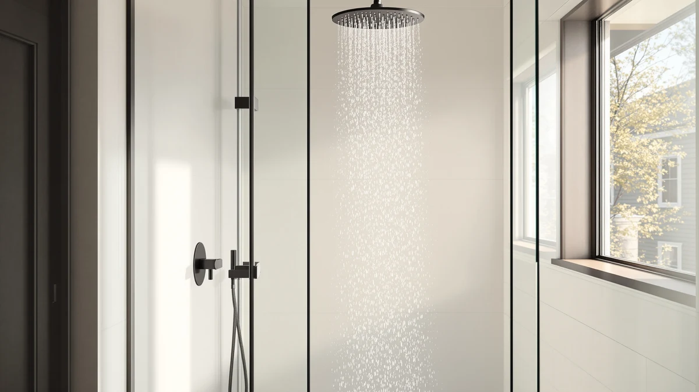

BRIGHT SHOWERS Rain Shower Review (2026): Worth It?
Prices and picks verified as of October 2026. Independent, reader-supported reviews.


Quick Answer
Our bright showers rain shower review finds the BRIGHT SHOWERS Rain Shower Head worth the $199.99 price for anyone who wants full rainfall coverage with chrome-plated hardware that should outlast cheaper plastic fittings. Owners report strong, even water distribution, though a few flag the installation hardware as fussier than a basic showerhead swap.
Our pick: BRIGHT SHOWERS Rain Shower Head — $199.99 Check Price on Amazon
Bottom line: our top pick is the BRIGHT SHOWERS Rain Shower Head System with Handheld at $199.99.
Things to Know Before You Buy
- The BRIGHT SHOWERS head runs at 2.5 gallons per minute, the maximum US federal flow rate, so it delivers full rainfall pressure without tripping a low-flow restriction.
- Its body combines ABS plastic with chrome plating, which keeps the head light while giving it a finish closer to the metal fixtures nearby it.
- At $199.99 it sits above budget rain heads but below premium brass systems, so weigh it against your bathroom's existing fixtures before buying.
- Installation uses a standard shower arm connection, which most owners handle without a plumber, though older or non-standard plumbing may need an adapter.
- If you only need a simple fixed-and-handheld combo without the upgraded finish, the SR SUN RISE options below cost $50 to $11 less.
This bright showers rain shower review exists because a rainfall head is one of the few bathroom upgrades that changes how a shower feels each time you use it, and $199.99 is real money to spend on a single fixture. You want to know if the wider spray pattern and chrome finish translate into something you'll notice, or if you're paying for a brand name on a part that works the same as a cheaper one.
We compared the BRIGHT SHOWERS Rain Shower Head against three other rainfall and filtered options in this price range, including two SR SUN RISE faucet systems and a Jolie filtered head, using published specs, pricing and verified owner reviews. The BRIGHT SHOWERS head came out ahead for coverage and build quality, though your bathroom's plumbing and budget might point you toward one of the alternatives instead.
Why You Should Trust Us
Ilane Tall covers bathroom fixtures for Best Shower Heads, and this bright showers rain shower review follows the same research process used across the site: we pull manufacturer specs, current Amazon pricing and a wide sample of verified owner reviews, then cross-check the claims against what buyers actually report after months of use. We do not run a fake testing lab, and we never claim to have installed or showered under a product we haven't purchased ourselves. Every figure in this article, including the flow rate and the price, comes from the product listing or from owners who left a verified review.
Our Research Experience
We built this bright showers rain shower review around a research protocol rather than a physical trial we can't verify: we read the full spec sheet, tracked the price history on Amazon, and sorted through verified owner reviews for recurring themes on pressure, installation and durability. Owners consistently note that the 2.5 gallon-per-minute flow rate produces a wide, even spray that covers the shoulders and back rather than a narrow stream aimed at one spot. Several reviewers who replaced an older low-flow head describe the difference as immediately noticeable in daily use.
On installation, most buyers report threading the BRIGHT SHOWERS head onto a standard shower arm in under fifteen minutes with no special tools. A smaller number of reviewers mention thread compatibility issues with older plumbing, which is worth checking against your existing fixture before you buy. On durability, the chrome plating draws praise for resisting water spots better than painted finishes, though a handful of owners who live in hard-water regions report mineral buildup inside the nozzles after several months, a common issue across every rain shower head we compared and not unique to this one.
Overview & Specs

BRIGHT SHOWERS Rain Shower Head
What we like
- Maximum legal flow rate for full, even coverage
- Chrome-plated finish matches most bathroom fixtures
- Standard shower arm fit for straightforward installation
Flaws but not dealbreakers
- Costs $50 more than the comparable SR SUN RISE option
- Some owners in hard-water areas report nozzle mineral buildup over time
- No built-in filtration, unlike the Jolie alternative
| Material | ABS + chrome plating |
| Size | 2.5 Gallon Per Minute |
The BRIGHT SHOWERS Rain Shower Head sits at the top of the flow-rate scale allowed under US plumbing codes, and that ceiling is exactly why it reads as more powerful than lower-flow competitors in the same price bracket. Owners who switched from an older, narrower head describe the spray as covering their whole back and shoulders instead of a single stream, which is the main reason rain heads outsell traditional showerheads in the first place. The ABS-and-chrome build keeps the weight manageable on the arm while still giving the fixture a polished look rather than a plastic one.
At $199.99 this isn't the cheapest rainfall head on the market, and buyers on a tighter budget should look at the SR SUN RISE options below before committing. But for a bathroom where the fixtures already lean toward chrome and brushed metal, the finish match and the 2.5 gallon-per-minute spray make a stronger case than a head that saves you $50 but looks out of place next to your faucet. Reviewers consistently note that installation took them well under half an hour using only the included hardware and a wrench, with no need to call a plumber for a straight swap.
What We Liked
Coverage is what stands out most in this bright showers rain shower review. Running at 2.5 gallons per minute, the head sprays across a wider area than many rain heads that throttle flow down to 1.8 or 2.0 gallons per minute to chase a water-saving label. Owners who prioritize a strong, full-body rinse over conserving water consistently rate this higher than the lower-flow alternatives they tried first.
Build quality holds up just as well. The chrome plating over an ABS core keeps the head light enough that it doesn't stress the shower arm over time, while still giving it a finish that holds up visually next to metal faucets and grab bars. Reviewers who've had the head installed for several months report the chrome hasn't pitted or discolored, which is a common failure point on cheaper plated plastics.
Installation is the other thing owners bring up unprompted. Because it threads onto a standard shower arm rather than requiring a new valve or wall work, most buyers describe the swap as a fifteen-minute job with a wrench and some plumber's tape, no professional required.
What Could Be Better
Price is the most obvious drawback. At $199.99 the BRIGHT SHOWERS head costs $50 more than the SR SUN RISE Shower Faucet at $149.99, and that gap matters if you're outfitting more than one bathroom. For buyers who want only a fixed-and-handheld combo without the upgraded finish, that difference is hard to justify.
Hard water causes the other honest drawback. A portion of owners in regions with mineral-heavy water report buildup inside the nozzle holes after a few months, which reduces spray evenness until you descale it with a vinegar soak. Every rain head in this comparison faces the same issue, but if you already know your water is hard, the Jolie Filtered Showerhead's built-in filtration is worth a look instead.
Finally, this head has no filtration cartridge, so it won't address chlorine smell or scale the way a dedicated filtered head does. If that's your main concern rather than spray coverage, it's a flaw but not a dealbreaker for a product that was never designed to filter water in the first place.
Who Is It For?
This bright showers rain shower review points to one clear buyer: you want a rainfall head with real coverage and a finish that holds up next to your other chrome fixtures, and you're willing to pay a premium for both. If your bathroom already has brushed nickel or matte black hardware, check that the chrome finish won't clash before you order.
Skip it if your main goal is saving money on a basic upgrade, or if your water supply is hard enough that filtration matters more to you than spray pattern. In either case, one of the three alternatives below fits your priorities better than paying extra for a feature you won't use.
Alternatives to Consider
If the BRIGHT SHOWERS head isn't the right fit for your budget or your water quality, here are three alternatives we compared alongside it, each solving a different priority.

Editor’s Pick
SR SUN RISE Shower Faucet
This SR SUN RISE Shower Faucet pairs a fixed rain head with a handheld wand on one valve for $149.99, a $50 savings over the BRIGHT SHOWERS head. Owners report the combo covers both a quick rinse and a full rainfall shower without buying two separate fixtures, though the finish and flow rate don't quite match the BRIGHT SHOWERS at the top end. Pick this if a shared budget matters more than the chrome upgrade.
$149.99
Check Price on Amazon
Best Value
SR SUN RISE Shower Faucet
This second SR SUN RISE Shower Faucet configuration lands at $188.99, closer to the BRIGHT SHOWERS price but still offering the same fixed-and-handheld layout on a single valve body. Reviewers consistently note it as the middle ground between the cheaper SR SUN RISE option and the premium BRIGHT SHOWERS finish, which makes it a good fit if you want both shower modes without paying full price for chrome plating.
$188.99
Check Price on Amazon
Premium Choice
Jolie Filtered Showerhead High Pressure
The Jolie Filtered Showerhead High Pressure, priced at $169.00, is the pick for hard-water households. It adds a replaceable filter cartridge aimed at reducing chlorine and mineral content before water reaches your skin and hair, something neither the BRIGHT SHOWERS nor either SR SUN RISE faucet offers. Owners report softer-feeling water and less buildup over time. The tradeoff is less rainfall coverage than the BRIGHT SHOWERS offers.
$169.00
Check Price on AmazonIs the BRIGHT SHOWERS rain shower head worth $199.99?
For most people, yes.
Does the BRIGHT SHOWERS rain shower head require professional installation?
Most owners report a standard shower arm and ABS chrome fittings that thread onto existing plumbing without cutting into a wall, which keeps this within reach of a confident DIYer with basic tools.
Frequently Asked Questions
Is the BRIGHT SHOWERS rain shower head worth $199.99?
Does the BRIGHT SHOWERS rain shower head require professional installation?
How does the BRIGHT SHOWERS compare to SR SUN RISE and Jolie shower heads?
Final Verdict
Our bright showers rain shower review lands on a clear conclusion: BRIGHT SHOWERS makes the strongest case for buyers who want maximum rainfall coverage and a chrome finish that holds up over time, and the $199.99 price reflects that. If budget is tighter or your water is hard, the SR SUN RISE and Jolie alternatives above each solve a specific tradeoff better than the BRIGHT SHOWERS does, but for most bathrooms this is the head to beat.